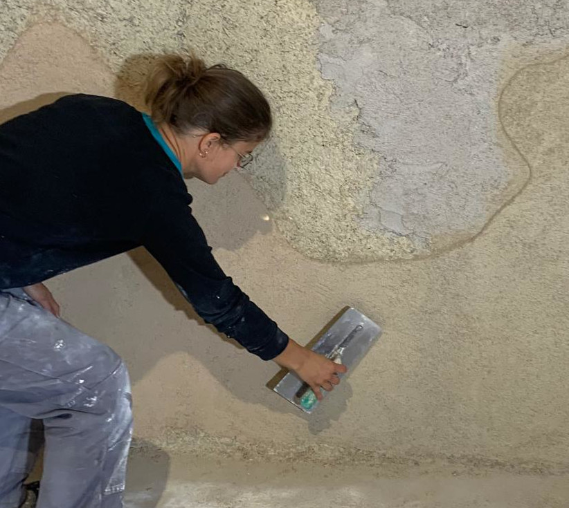
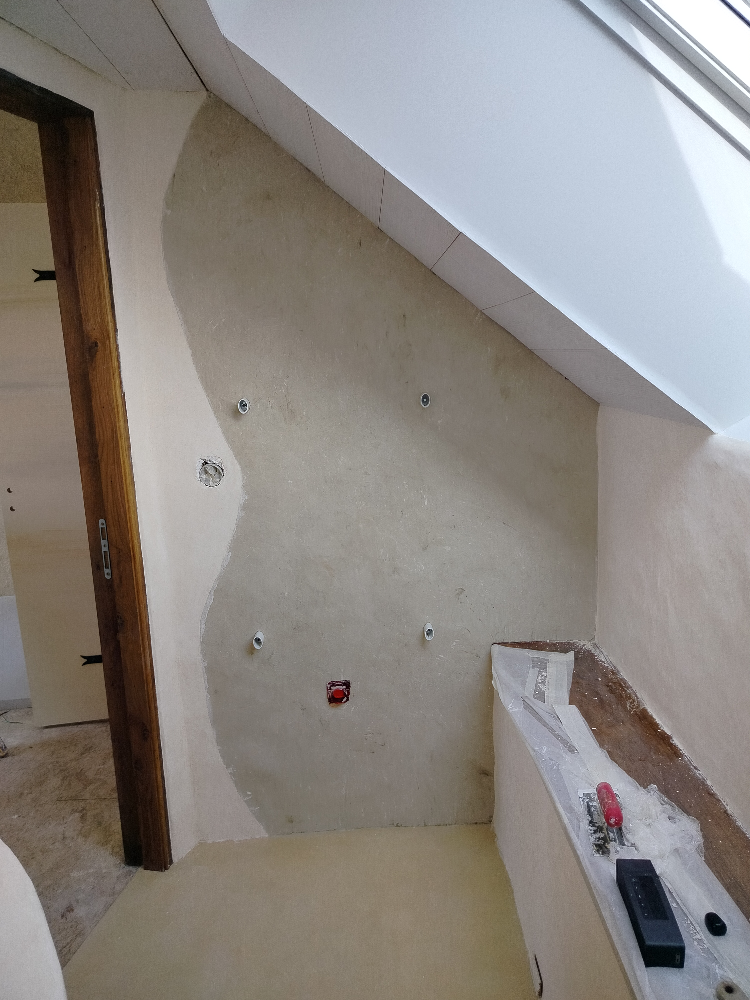
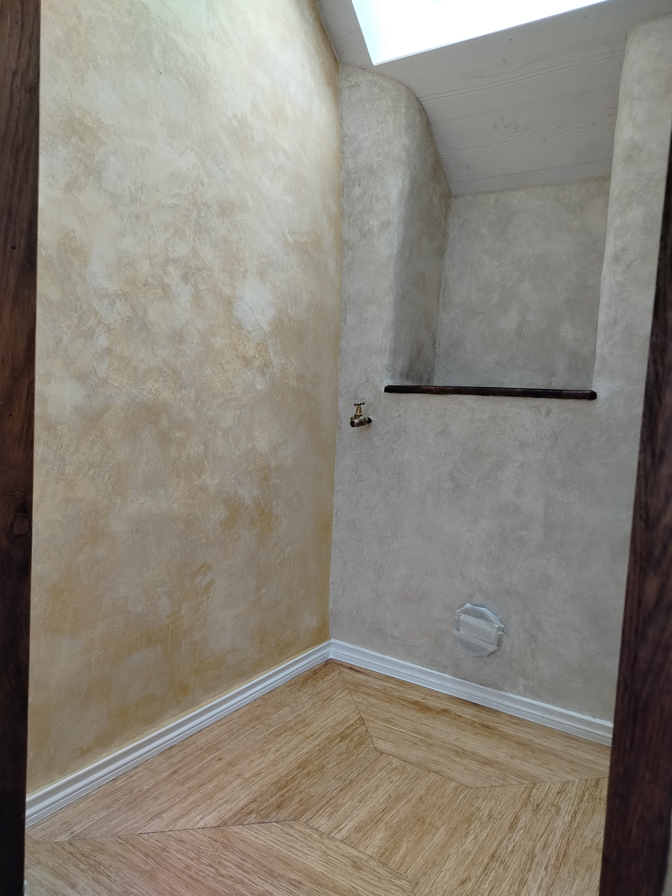
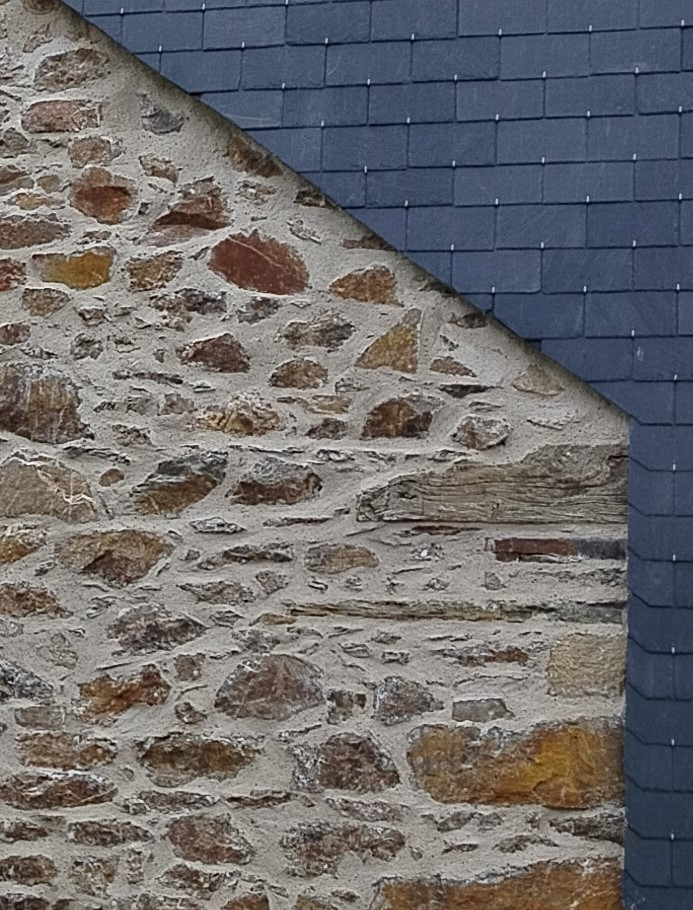
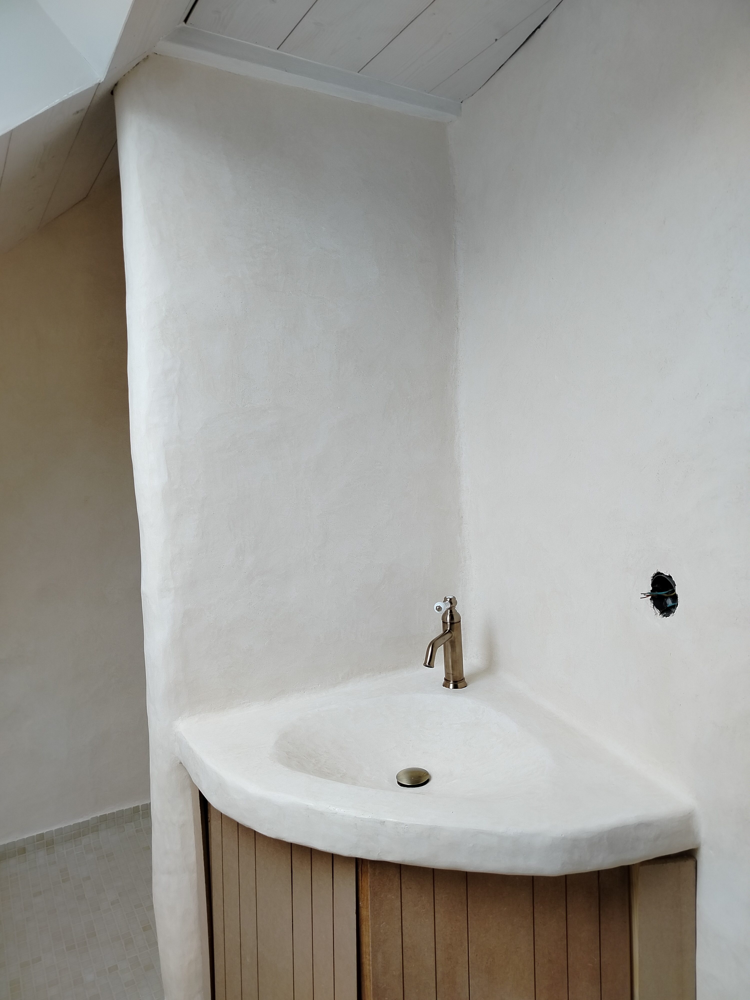
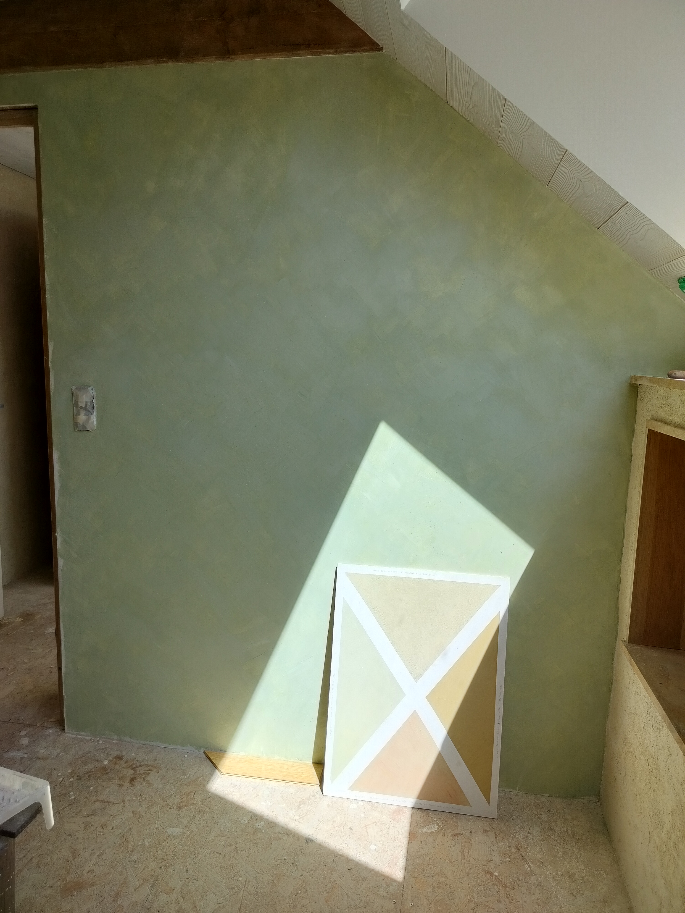
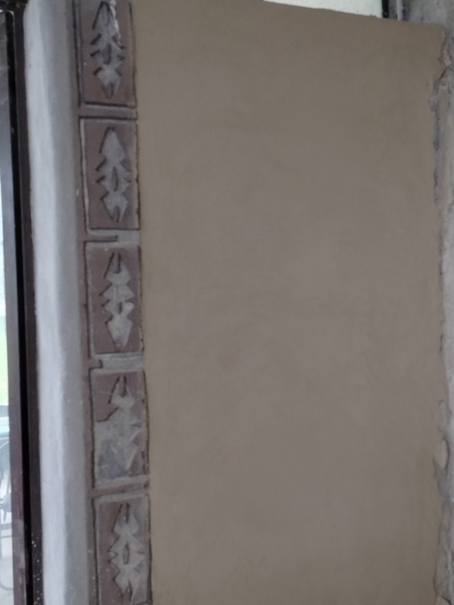
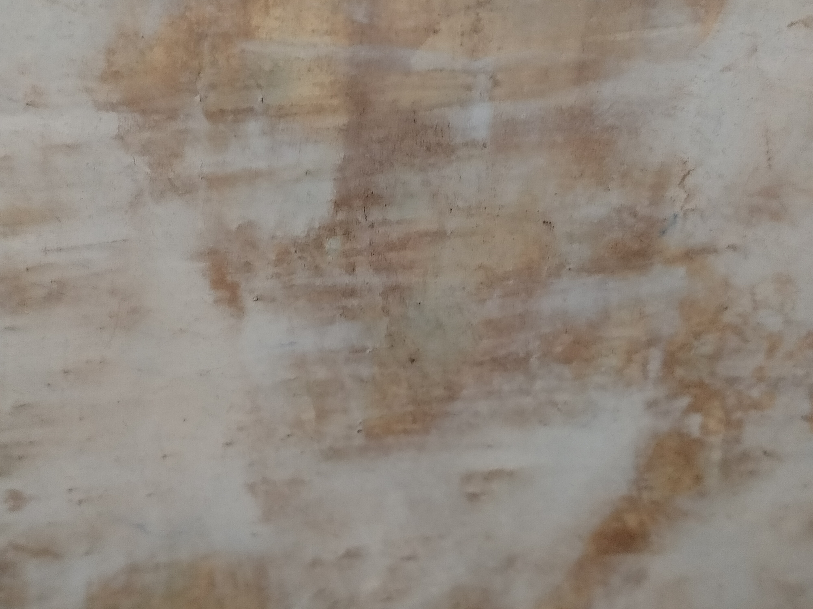

La Roche Blanche
Vos enduits naturels, terre, chaux, sur-mesures à proximité de Rennes

Par Ségolène Préel, artisane en enduits formée chez les ateliers Vérone...
La Roche Blanche
Par Ségolène Préel, artisane en enduits formée chez les ateliers Vérone...
Formée par les Ateliers de Vérone
Conductrice de travaux dans le bâtiment depuis 10 ans, j’avais à coeur de remettre au goût du jour les techniques traditionnelles qui sont plus écologique et qui consomme moins d’énergie grise, notamment au niveau des salles d’eau afin de proposer une alternative au carrelage et à la faïence.
Afin d’assurer étanchéité et le raccordement en eaux, j’ai également passé mon CAP plombier afin de vous garantir un ouvrage pérène.
Passionnée par les matières naturelles, je façonne les vasques et les receveurs, enduits de tadelakt ou de béton ciré à la chaux. Mon expertise met en valeur les techniques traditionnelles et contemporaines pour sublimer vos espaces intérieurs avec élégance, respect de l’environnement et authenticité. J’accompagne chaque projet avec créativité et écoute attentive.

Découvrez les enduits décoratifs naturels à base de terre et/ou
de chaux. Je vous accompagne pour transformer vos espaces intérieurs
grâce à des techniques authentiques et respectueuses de
l'environnement qui subliment chaque pièce de votre habitat avec
élégance.
Découvrez la galerie mettant en valeur la beauté authentique et
chaleureuse de nos enduits naturels.






